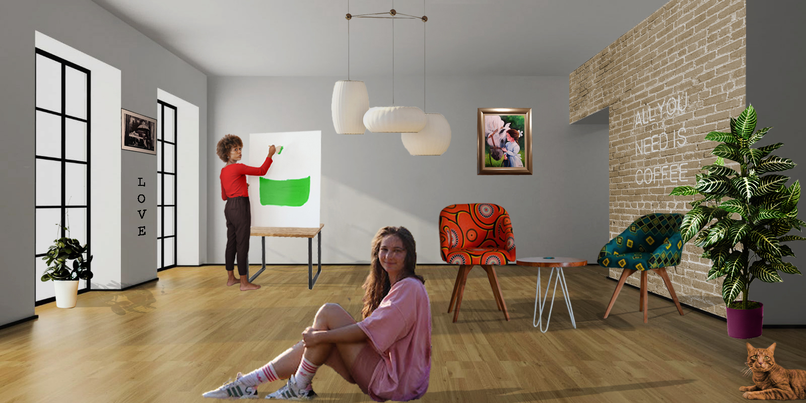

Prva vježba bila je izrada vlastitog fonta u FontForge-u ili Fontographeru.
Druga vježba bila je izrada Bezierovih krivulja, unutar vlastitog fonta, u Ilustratoru.
Treća vježba bila je nacrtati cvjetove koristeći različite boje, kopiranja, transformacije.
Četvrta vježba sadrži složene oblike koje sam dobila koristeći metode spajanja/oduzimanja, te koristeći gradijente i transparenciju.

Prvi projektni zadatak bio je prikaz spajanja svih elemenata iz prethodnih vježbi u jednu cjelinu. Tema je bila voće.
Peta vježba sadrži fotografije na kojima sam uklanjala mrlje i prepravljala nedostatke kako bi dobila željeni izgled fotografije.

Šesta vježba bila je korekcija boja na fotografijama koju sam radila u Photoshopu.

Sedma vježba bila je fotomontaža.

Drugi projektni zadatak bila je fotomontaža različitih elemenata uz potrebno koloriranje pojedinih elemenata.
Osma vježba sadržavala je dva kinemagrafa.


Deveta vježba sadrži video koji smo morali urediti po određeim parametrima.
Deseta i jedanaesta vježba su vlastite web stranice.
10. i 11. vježba